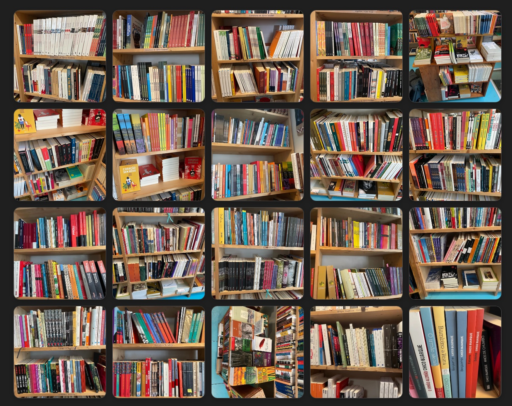

From ~20 shelf photos to 200 catalogued entries — with some help.

I recently learned that my birthday also happens to be the Dia Mundial da Língua Portuguesa — which, given that I have been slowly absorbing Portuguese (both Brazilian and Portuguese versions) over the past 3 years, feels less like a coincidence than an imperative.
Earlier this year I was in Paris and walked past the Librairie Portugaise et Brésilienne on rue Tournefort in the 5th arrondissement — one of the only specialist Lusophone bookshops in Europe. I went in, browsed for a long time, chatted with the person at the desk, bought a few things, and came out feeling acutely aware of how much I didn't know: about Angolan literature, about Cape Verdean poetry, about the extraordinary range of Brazilian fiction beyond the authors I already recognised.
"I wanted a reading list. The shelves were, in effect, an expert's curated selection. But there were so many that I thought, I'll just photograph the shelves I am interested in, and research them manually later. But I pretty quickly realised that was a rabbit hole I couldn't justify given my other responsibilities…"
So I gave the ~20 photographs I took of the shelves to Anthropic's chatbot version of Claude to do the research. It has ended up being quite an engrossing experiment for me to learn how to put together and sequence a simple project like this.
Rapid bibliographic cross-referencing at a scale I couldn't have managed manually in a reasonable time. Identifying English translations and their publication details across a wide range of publishers. Recognising canonical works and their significance — it was able to identify that Noémia de Sousa's Sangue Negro had circulated in mimeograph for fifty years before formal publication, or that Luandino Vieira's Luuanda award caused the Portuguese secret police to dissolve the writers' society.
It was able to flag uncertainty — flagging entries it couldn't verify as "spine only," and generating a usable list of errors when asked to act as an editor.
Catching the AI's own (confident) errors. Several blurbs described books using the wrong translator, wrong trilogy volume, or wrong country of publication — errors that looked plausible at first glance. It even included a Henning Mankell book. The model review pass caught most of these, but it spotted a few and flagged them.
It also can't replace reading the books, which I have not done yet myself, though I did buy a couple of Ailton Krenak books, one by Rosane Borges (on Sueli Carneiro) and an introduction to Candomblé.
A personal experiment to build a reading list, primarily — structured around the question of what Lusophone literature I should know if I'm serious about learning Portuguese and understanding the world it opens up. That means Angola, Mozambique, Cape Verde, Brazil and Goa, not just Portugal. (And, as one of my kids pointed out, it doesn't include any East Timorese writing, though maybe I missed that shelf when I was taking pictures.)
It's also a small demonstrator of what AI can assist me to do with a bit of basic back-and-forth research — not replacing expertise, but rapidly building an initial structure that human judgement can then correct and refine — and this feels genuinely useful. The catalogue took a few hours of iterative work rather than weeks.
It's just based on what was on the shelves at the bookshop, so whether it's a good reading guide is for others to judge. Let me know things you think I should add, and why, via the Suggest a book link below.